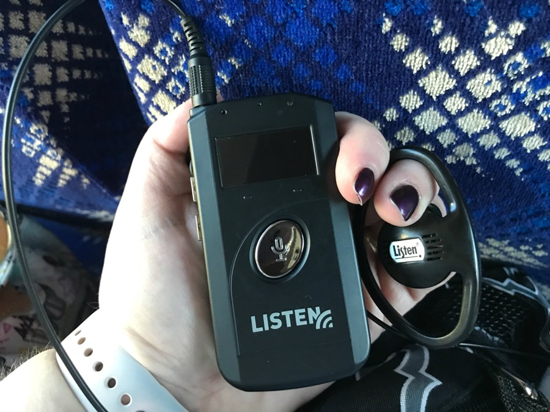
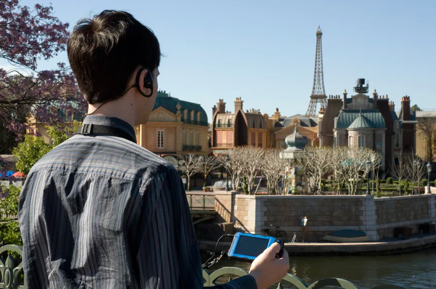
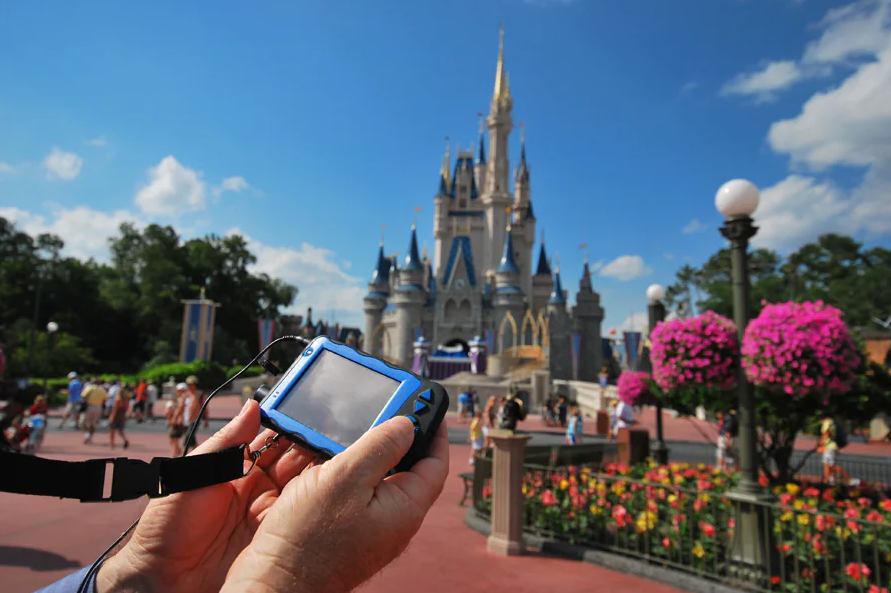
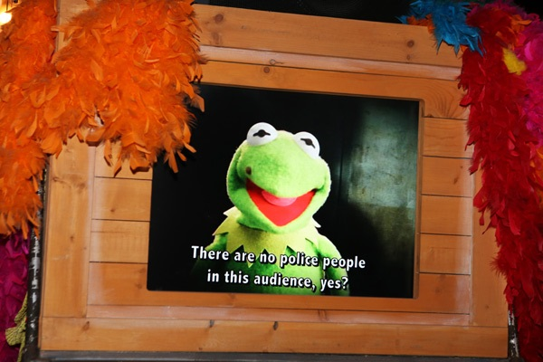
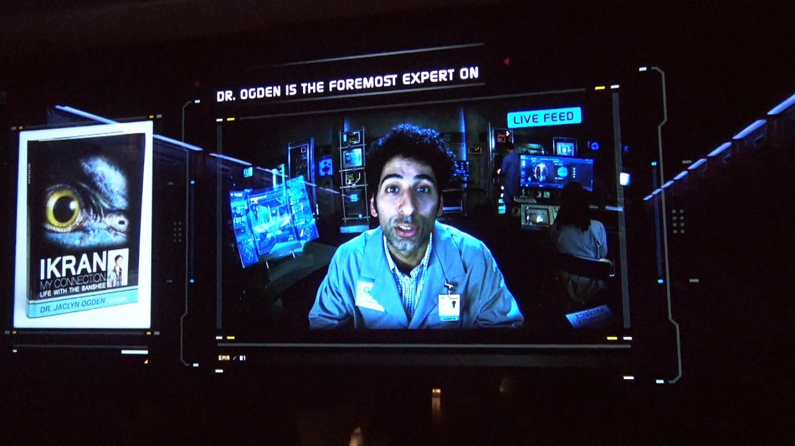
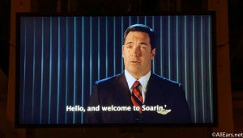
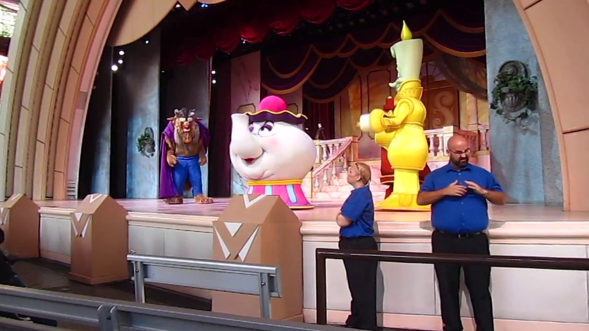
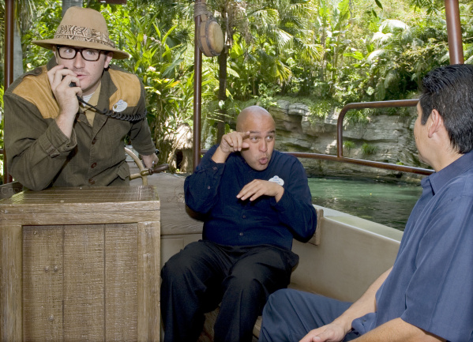
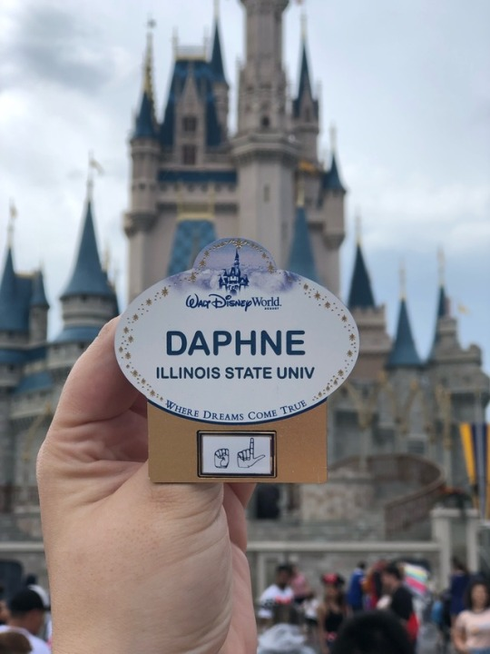

What services are available?
According to Disney's website, the parks are currently offering these servies:
- Guest Room Amenities
- Assistive Listening
- Handheld Captioning
- Video Captioning
- Sign Language Interpretation
Is Assistive Listening devices available?
Yes, Disney provides Handheld Devices for rental. Rentals can be purchased and picked up at Guest Relations. Rentals cost a refundable fee of $25. It is recommended to go to the parks early to rent these devices since rentals are on a first come first serve basis and reservations are not available. Please bring your own headphones to use as well.
These devices are recommended for guests who have mild to moderate hearing.
To see what types are attractions and shows work with the device please view this link: Link
Is Handheld Captioning available?
Yes, Disney provides Handheld Devices for rental. Rentals can be purchased and picked up at Guest Relations. Rentals cost a refundable fee of $25. It is recommended to go to the parks early to rent these devices since rentals are on a first come first serve basis and reservations are not available. Please bring your own headphones to use as well.
To see what types are attractions and shows work with the device please view this link: Link
 Do ride monitors have Video Captioning?
Some monitors/screens in pre-show areas will open captioning already on them. These screens are marked with a CC symbol on the bottom left if there a multple screens (like in Muppets). Most newer rides, will have one pre-show screen with CC automatically being displayed in English. CC can also be viewed on the Handheld Captioning Devices as well. Please ask a Cast Member if you need help finding a screen with CC.
  How do I request a Sign Language Intrepretation?
Walt Disney World provides ASL interpreters for live shows, parades, and a few rides. To obtain an up to date schedule on this rotation, please email WDPRsignlanguageservices@disney.com or visit Guest Relations when you enter the park.
Cast Members who known ASL will also have that indicated on their nametags on a gold bar.
  Service dogs are allowed in all parks. Service animals must be trained and can be a dog or miniature horse. Some rides allowed service animals to ride with the owner, while others may ask for the animal to wait at the load/unload area in a crate. There are multiple locations for service animals to relieve themselves as well.